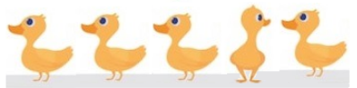
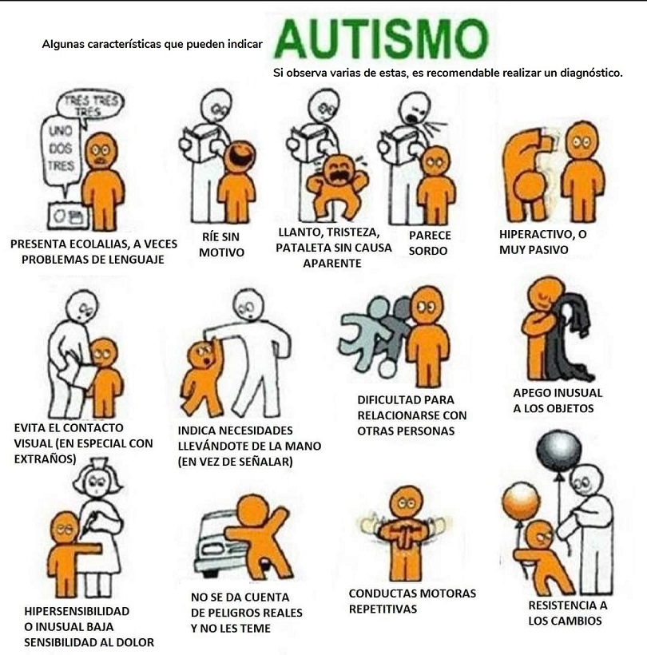
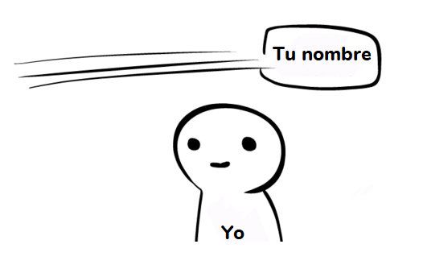
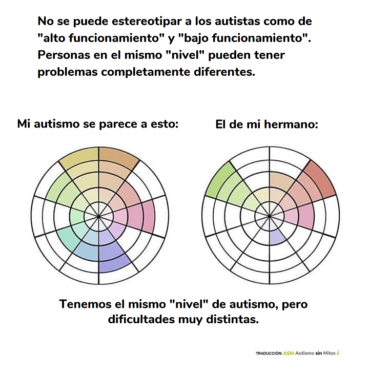

SOMOS AUTISTAS
Estamos en Argentina, somos una familia completa formada por 6 personas (2 adultos y 4 hijos), todos con diagnóstico de TGD/TEA. Creamos este sitio para compartir lo que a nosotros nos sirvió cuando nos encontramos con nuestros diagnósticos, para contar nuestras historias y, sobre todo, para desmentir categóricamente los mitos con los que nos encontramos durante nuestro viaje de descubrimiento.
¿Qué es el autismo y cuáles son sus características?
El Trastorno del Espectro Autista es una condición del neurodesarrollo que se caracteriza por la presencia de deficiencias persistentes en la comunicación y en la interacción social.
Características comunes en infantes
Recuerde... No hay dos autistas iguales. No todos manifiestan las mismas características ni de la misma manera. Por eso es importante lograr un diagnóstico formal.
Más en detalle...
Es una condición:
- No se contagia. Es permanente. No cambia con el tiempo.
- Muchas veces se denomina "transtorno" porque se refiere como una alteración de la salud. Sin embargo, generalmente lo que causa más problemas son verdaderos transtornos que se manifiestan al mismo tiempo que el autismo ("comorbolidades") como la ansiedad, prosopagnocia, síndrome auditivo, problemas de la memoria ejecutiva, alteraciones sensoriales por exceso o por defecto (por ejemplo, hipersensible o hiposensible), etc.
Del neurodesarrollo:
- Es la forma en la que se desarrolla el cerebro, por eso es que no cambia. Con químicos se puede alterar su funcionamiento y manifestación, pero el efecto del medicamento es una alteración transitoria y puede tener efectos secundarios.
Persistentes:
- Los efectos permanecen para toda la vida. La persona aprende a manejarlos, en mayor o menor medida.
En lo social:
- Es donde las dificultades son más visibles, pero no son las únicas. Muchos autistas aprenden a "enmascararse" con el tiempo.
Problemas de la memoria ejecutiva
Mucha gente se ofende si no te acordás quién es. Lo cierto es que la falla de memoria de trabajo y la dificultad para recordar nombres y rostros fuera de contexto es una característica bastante habitual en nosotros los autistas.
ESPECTRO del autismo

ESPECTRO del autismo
Ni el DSM-V ni el CIE-10 lo consideran como entidad o como subcategoría, aunque, sin embargo, la literatura científica y la de divulgación hacen alusión a él profusamente. Presenta las características de los otros cuadros autísticos, aunque sus síntomas parecen hallarse atenuados y la inteligencia de sus portadores se encuentra entre los rangos que van de normal a superior. En ocasiones se confunde con el síndrome de Asperger, pero son dos entidades diferenciadas.
LUTO de los padres
Muchos padres se "enlutan" cuando se encuentran con el diagnóstico de autismo de sus hijos, se angustian, se desesperan, se amargan, se asustan, etc. Lo cierto es que esos padres piensan en el futuro de sus hijos, y temen por ellos porque no tienen referencias de cómo es o cómo vive un adulto autista; no es consciente de haber visto nunca uno, no tiene idea de cómo es un autista adulto más allá de lo escenificado en películas como "Rainman", y se imaginan que su hijo va a terminar encerrado en algún manicomio. Lo peor es que esto era muy cierto hace 50 años; muchos autistas eran literalmente encerrados en "institutos" donde muchas veces no llegaban a adultos, y cuando lo hacían era con terribles problemas de desarrollo.
Hoy la historia es distinta, se conoce cada vez más sobre el tema, y existen terapias y métodos para saber qué hacer y qué no hacer para que esa persona autista se desarrolle lo mejor posible y tenga una vida plena. La verdad es que estos nuevos "padres de autistas" por llamarlos de alguna manera, no tienen ni idea de que existimos los autistas adultos; de que podemos vivir, desenvolvernos y tener una vida aceptable con la ayuda correcta. De alguna manera piensan que los autistas deben estar recluidos en algún nosocomio o que deben reconocerse desde varias cuadras de distancia, y se sorprenden (para bien) al aprender que somos personas como todos y que muchos pueden hasta "pasar desapercibidos" hasta cierto punto. Que podemos asistir a la escuela, crecer, tener a veces un trabajo, una familia y hasta algún día ser independientes.
Los hitos que se pueden esperar en un hijo neurotípico puede ser que tarden mucho más en un autista, a veces muchos años, o no lograrse en absoluto; pero lo cierto es que hay montones de herramientas, terapias e incluso medicamentos para los casos donde sea absolutamente necesario ese tipo de ayuda, para que el niño autista transite la infancia lo mejor posible para llegar a ser un adulto independiente. Por supuesto hay casos graves donde esto no se logra, pero la gran mayoría puede hacerlo. Incluso la actitud, el decir "yo puedo" es parte de ello.